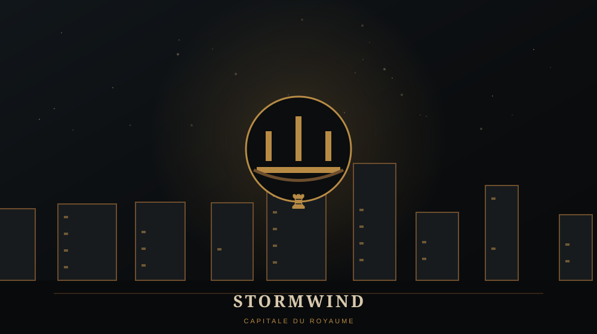

STORMWIND

🏰 STORMWIND
Stormwind est la capitale du royaume gouverné par Llane Wrynn. Elle constitue le cœur politique des Humains pendant la Première Guerre et l'objectif ultime de l'invasion orque.
⚔️ LE POINT D'ABOUTISSEMENT
Toute la campagne orque converge vers Stormwind. Après les combats dans les régions périphériques, l'avancée de la Horde atteint finalement la capitale lors de la dernière mission.
⚠️ LORE ULTÉRIEUR / SPOILERS
La continuité officielle retient la chute de Stormwind pendant la Première Guerre. La cité sera reconstruite après les événements de Warcraft II et deviendra l'une des capitales centrales de World of Warcraft.
Le royaume appelé simplement « Azeroth » dans le premier Warcraft sera ensuite couramment désigné comme le royaume de Stormwind, afin de ne pas le confondre avec le monde entier.